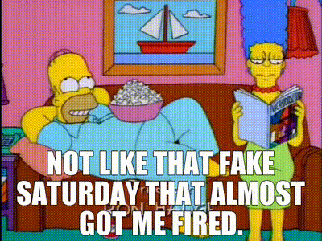

Welcome to my online CV that I've created.
Occasionally people ask me where I got the name Fake Saturday. It's actually from a simpsons clip I saw years ago.

Summary
I am beginner to web development, but am really enjoying learning and plan to keep doing this for the forseeable future. Enjoyer of kpop music.
Education
- Masters degree in talking absolute nonsense - University of Columbia (1994-2023)
Work Experience
Skills
- Attention to detail ⭐️⭐️⭐️⭐️⭐️
- Ambition for days ⭐️⭐️⭐️⭐️⭐️
- Can guess any kpop song in under 10 seconds ⭐️⭐️⭐️⭐️⭐️
Awards and Certifcations
- Certfied Geezer
- King of absolutely nothing
Other
- Contact Me
- Hobbies